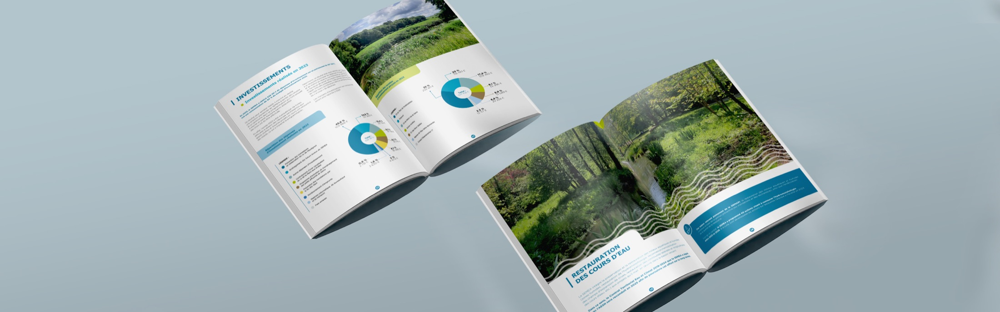

NosPlutôt que de longs discours sur notre savoir-faire, rien de plus parlant que des cas pratiques illustrant le contexte, les attentes clients et les solutions concrètes que nous avons apportées à chaque problématique. réalisations.
Plutôt que de longs discours sur notre savoir-faire, rien de plus parlant que des cas pratiques illustrant le contexte, les attentes clients et les solutions concrètes que nous avons apportées à chaque problématique.


Études
de cas.
Le contexte, les attentes du client, la solution : cinq projets racontés de bout en bout.
- 01
Peugeot SportPress kit interactif
Un dossier de presse modulable pour les filiales des cinq continents.

- 02
Legs & DonationsLexisNexis — Print & digital
Un guide de référence digitalisé, avec plateforme et annuaire en ligne.

- 03
WECProgramme HTML avec kiosque
Des programmes imprimés devenus digitaux, interactifs et multilingues.

- 04
AvantisSite web 2025
Le site d’un groupe d’ingénierie mécanique, relooké et réalisé sous WordPress.

- 05
SEMEARapport d’activités 2024
Le rapport d’activité d’un syndicat dédié à la ressource en eau.

Sept expertises,
une signature.
Design graphique, développement, 3D, réalité augmentée et virtuelle, IA, vidéo, événementiel : filtrez par expertise, puis ouvrez un projet pour en savoir plus.
Après plusieurs années de programmes imprimés, le promoteur souhaitait proposer un format digital plus dynamique et accessible.
Nous avons développé un programme en HTML responsive, adapté à une lecture multi-supports et optimisé pour un accès fluide sur les circuits.
AVANTIS est un groupe d’ingénierie mécanique, spécialisé dans les secteurs de l’aéronautique, du spatial, de la défense, du naval et de l’automobile.
Nous avons relooké et réalisé entièrement le site internet via WordPress afin que le client puisse le faire évoluer via le back-office.
Dans le cadre du Championnat du Monde d’Endurance FIA WEC et des 24 Heures du Mans, Peugeot Sport souhaitait concevoir un support média modulable par les filiales du groupe présentes sur les cinq continents.
L’enjeu : créer un outil hautement graphique et dynamique, fidèle à l’identité visuelle de la marque, tout en permettant la personnalisation par les filiales internationales.
Ce guide est l’ouvrage de référence en matière de legs testamentaires pour les notaires et leurs clients. Il est édité par LexisNexis, un des leaders de l’édition juridique en France et de l’innovation dans le droit, associant expertise juridique et technologie.
LexisNexis souhaitait accroître sa visibilité sur le net et surtout digitaliser le recueil et la mise à jour des informations des fondations sous une plateforme personnalisée unique.
Le Syndicat mixte des bassins versants de la rivière École et de leurs affluents (77) œuvre pour la préservation de la ressource en eau et la prévention des inondations.
Nous prenons en charge la conception du rapport d’activité et divers projets d’édition, dans le respect strict de la charte graphique établie.
Aucun projet dans cette catégorie pour le moment.
Faisonsvibrervotre image.
Identité, site web, 3D, réalité augmentée, salon virtuel… Parlez-nous de votre projet : nous imaginons la solution qui lui ressemble.
contact@artexposium.fr →